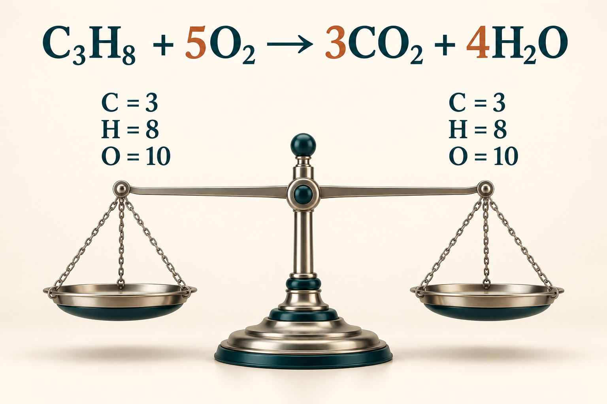

01 / FUNDAMENTOSQiQuímica I
O INÍCIO DAS DESCOBERTAS
Química I
Um primeiro olhar para a Química e suas conexões com o cotidiano.
11 temas · Materiais em preparaçãoUm espaço para conectar ideias, explorar a ciência
e construir conhecimento, uma
descoberta de cada vez.
Escolha uma disciplina e encontre seu espaço de estudo.
Um primeiro olhar para a Química e suas conexões com o cotidiano.
11 temas · Materiais em preparaçãoUm espaço para aproximar o conhecimento químico e a biotecnologia.
Conteúdos em organizaçãoNovas perspectivas para ampliar conexões e continuar sua aprendizagem.
Conteúdos em organizaçãoUm novo caminho de aprendizagem, para uma etapa futura.
Roteiros, materiais e atividades organizados por disciplina.
11 temas para acompanhar seu percurso em Química I, na sequência de estudo da disciplina. Os materiais serão acrescentados em cada tema.
Os materiais deste tema ainda não foram adicionados. Este espaço reunirá os roteiros, arquivos e atividades correspondentes.
Os materiais deste tema ainda não foram adicionados. Este espaço reunirá os roteiros, arquivos e atividades correspondentes.
Os materiais deste tema ainda não foram adicionados. Este espaço reunirá os roteiros, arquivos e atividades correspondentes.
Os materiais deste tema ainda não foram adicionados. Este espaço reunirá os roteiros, arquivos e atividades correspondentes.
Os materiais deste tema ainda não foram adicionados. Este espaço reunirá os roteiros, arquivos e atividades correspondentes.
Os materiais deste tema ainda não foram adicionados. Este espaço reunirá os roteiros, arquivos e atividades correspondentes.
Os materiais deste tema ainda não foram adicionados. Este espaço reunirá os roteiros, arquivos e atividades correspondentes.
Os materiais deste tema ainda não foram adicionados. Este espaço reunirá os roteiros, arquivos e atividades correspondentes.


Os conteúdos desta disciplina estão sendo organizados.
Em breve, você encontrará aqui a
sequência de estudo e os materiais de cada tema.
A ciência começa com uma pergunta.
Vamos descobrir juntos?